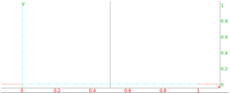

13.11.8 The radical axis of two circles: radical_axis
The radical axis of two circles is the set of points which have the
same power with respect to each circle.
The radical_axis command finds the radical axis of two
circles.
-
radical_axis takes two arguments:
C1,C2, two circles.
- radical_axis(C1,C2) returns and draws the
radical axis of C1 and C2.
Example.
Input:
radical_axis(circle(0,1+i),circle(1,1+i))
Output:
